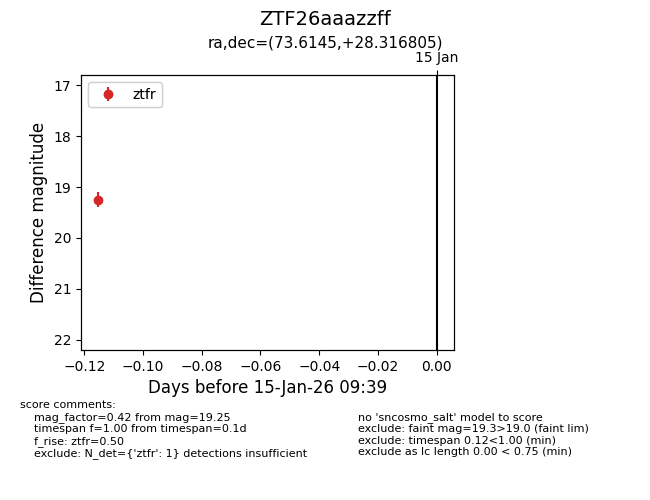
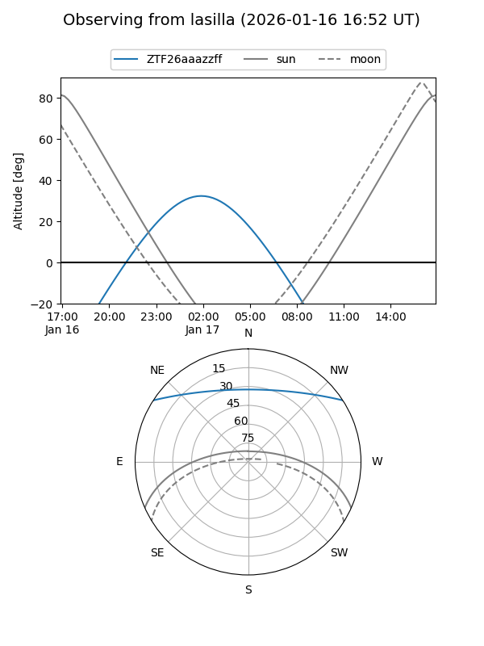
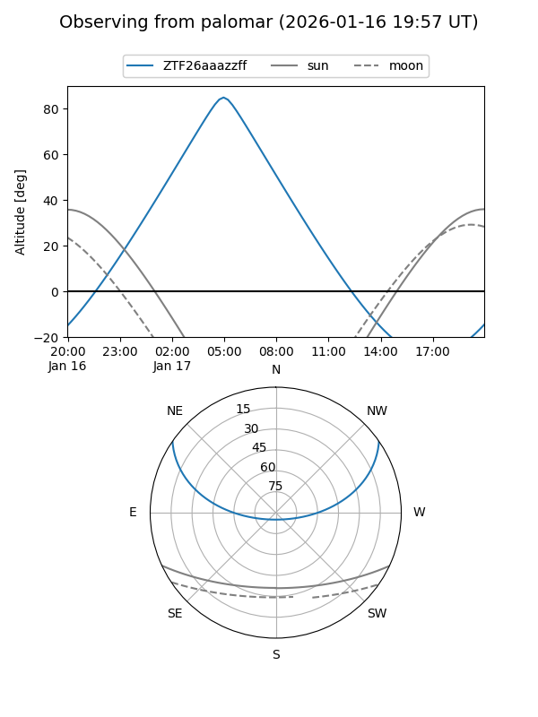

ZTF26aaazzff
Target ZTF26aaazzff at 2026-01-15 09:40
Aliases and brokers:
FINK: link
Lasair: link
ALeRCE: link
alt names
ZTF26aaazzff (ztf,fink_ztf)
Coordinates:
equatorial (ra, dec) = 73.6145,+28.31680
equatorial (HMS+DMS) = 04:54:27.48,+28:19:00.50
galactic (l, b) = (174.1010,-9.58298)
Flags:
Photometry:
last ztfr=19.25
1 ztfr detections
Lightcurve

Visibility


Additional plots